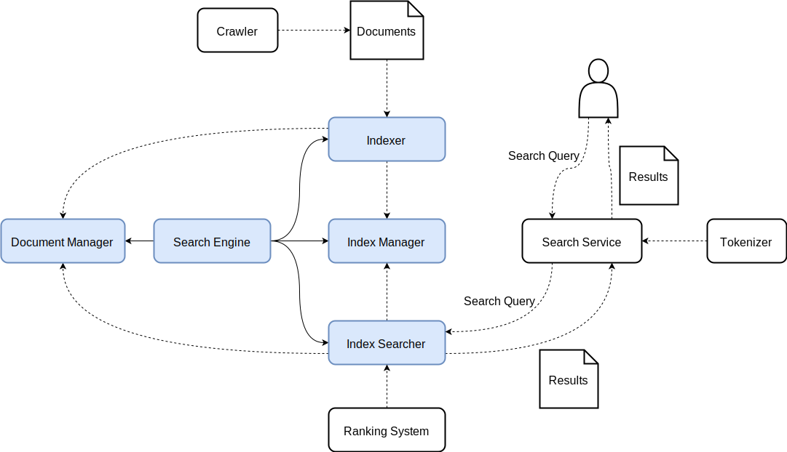
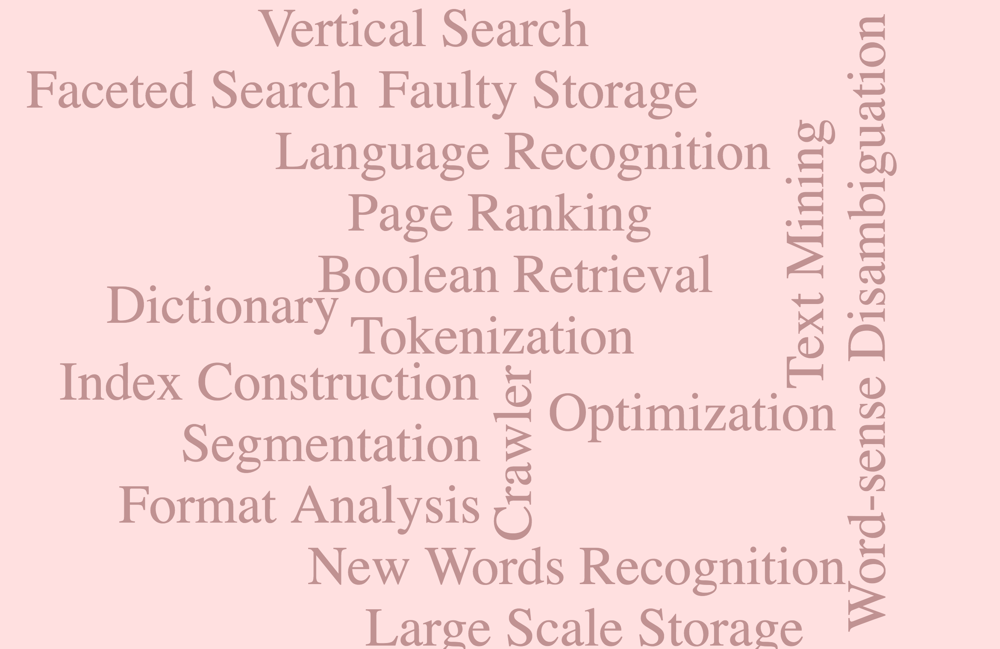

History of Search Engines
Search Engine Market share in March 2017
Types of Search Queries
Fall 2002, Andrei BroderParts of a Search Engine
| I | like | search | engine | keyword | in | ||
| Doc1 | 1 | 1 | 1 | 1 | 0 | 0 | 0 |
| Doc2 | 1 | 0 | 1 | 0 | 1 | 1 | 1 |
| Doc1 | Doc2 | |
| engine | 1 | 0 |
| 0 | 1 | |
| I | 1 | 1 |
| in | 0 | 1 |
| keyword | 0 | 1 |
| like | 1 | 0 |
| search | 1 | 1 |
Actually, It's much more COMPLICATED
Word-sense Disambiguation
New Words Recognition
References